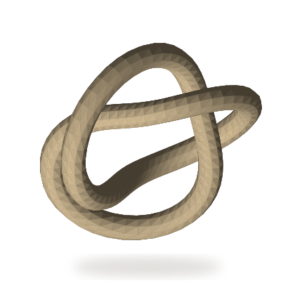

01Рассмотреть
01Рассмотреть Объект 01 / 2026
LAST SIGNAL
Последний сигнал / история одного ночного поезда
Семь глав: ночной поезд, закрытая обсерватория и знакомый сигнал. Рассказ, в котором прокрутка ведёт от полуночи к рассвету.
Об экспонатеМесто, где цифровые работы
становятся экспонатами.
Я собираю веб-интерфейсы, инструменты и маленькие миры, в которые хочется заглянуть.
Это личная выставка учебных проектов и самостоятельных концептов. Слева — цифровая коллекция, справа — место для будущих игр.

От атмосферной веб-истории до учебной fullstack-системы. Подробнее об авторе, инструментах и подходе — за музейным столом.
Шесть работ. Шесть способов
превратить идею в опыт.
Рассмотри работу ближе, прочитай её историю или открой сам проект. Одна архитектура объединяет разные цифровые материалы.
01Рассмотреть Последний сигнал / история одного ночного поезда
Семь глав: ночной поезд, закрытая обсерватория и знакомый сигнал. Рассказ, в котором прокрутка ведёт от полуночи к рассвету.
Об экспонатеЦифровая экспедиция в глубину
Спуск через четыре зоны океана, полевой атлас и разбор исследовательского аппарата.
Об экспонатеПечатный шум, работающий инструмент
Антидизайн-галерея и лаборатория, в которой можно собрать и экспортировать свой постер.
Об экспонатеПолевой атлас Pokémon
24 вида, команда из шести, анализ защиты и личный полевой блокнот.
Об экспонатеОбсерватория воображаемых миров
Три процедурных мира, управляемая камера и последовательный маршрут наблюдения.
Об экспонатеФинансовый учёт малого бизнеса
Роли, журнал операций, аналитика, отчётность, аудит и мониторинг в одном учебном контуре.
Об экспонатеПространство будущих игр.
Пока здесь нет опубликованных игр.
Постамент ждёт первого экспоната.
Коллекция будет расти. Когда появится готовая игра, здесь будет её собственная история и настоящий способ сыграть.
Пока посмотреть веб-проекты →IseFDK / Developer & Creator
В этой коллекции собраны мои учебные проекты и самостоятельные веб-концепты. Отдельная работа может быть атмосферной обсерваторией, редактором постера, фан-атласом или системой финансового учёта.
Мне интересны визуальные истории, 3D-сцены и инструменты, с которыми можно что-то сделать: исследовать, собрать, сохранить. Кейсы показывают не только внешний вид. Рядом с ним есть данные, состояния, экспорт, навигация и ограничения.
Для визуальных экспериментов важен резервный режим, для инструментов — предсказуемый результат, для fullstack — согласованность интерфейса и логики.
Концептуальные проекты созданы с AI-помощью в разработке и работе с изображениями. В экспозиции отдельно указано, что вымышлено, откуда взяты данные и где заканчивается модель.
Профиль, репозитории и актуальные публичные ссылки собраны там.
Последний сигнал / история одного ночного поезда
Рассказать одну поездку так, чтобы движение пейзажа, паузы между абзацами и смена света следовали за историей, а читатель сам выбирал темп.
Визуальная сцена занимает экран, но рассказу нужно место для чтения. На узком телефоне панорама теряет композицию, а увеличенный текст не должен бороться с закреплёнными слоями.
Семь глав связывают путь с 00:07 до 06:03: платформа, окно вагона, тоннель, горная тропа, приёмник, купол и рассвет. Обычная прокрутка управляет слоями, рядом есть полная читательская версия и страница о создании.
Положение поезда, планы пейзажа, настройка приёмника и створки купола вычисляются из прогресса главы. При прокрутке назад сцена возвращается по тому же пути; перехвата скролла нет.
Три широкие иллюстрации дополнены тремя самостоятельными портретными версиями. Небо, тропа и обсерватория заново расположены в узком кадре; поезд, билет и аппаратура нарисованы отдельными SVG-слоями.
read.html содержит те же 21 абзац без сценической хореографии. Режим без движения учитывает системную настройку и выбор читателя; увеличенный текст автоматически получает статичную компоновку.
Каждый проект открывается отдельно. Здесь можно выбрать, на что обратить внимание.
Начни на платформе и прокрути несколько глав вниз, затем вернись вверх. Следи за поездом, расстоянием между планами и светом. Нет таймера или автоматического звука.
Выбери главу в меню или на линии маршрута. В конце нажми «Ещё одна поездка», чтобы вернуться к началу; индикатор снова показывает первую главу.
Переключи «Без движения» или открой «Рассказ целиком». Сравни текст с иллюстрированной версией, а на странице «О создании» посмотри описание иллюстраций и устройства истории.


Цифровая экспедиция в глубину
Построить экспедицию, где движение по странице помогает понять глубину, а научные записи можно читать независимо от эффектов.
У вертикального скролла есть естественная связь со спуском. Важно сохранить эту связь, не превращая чтение в гонку с анимацией и не выдавая художественный аппарат за инженерную документацию.
Четыре обратимые стадии меняют положение камеры, освещение и частицы вокруг процедурного аппарата. Рядом живёт обычная структура сайта: маршрут экспедиции, восемь досье видов и отдельный разбор NEREID.
Глубина связывает сцену, названия зон и приблизительное давление. При движении вверх тот же путь воспроизводится в обратную сторону.
Русские и латинские названия, группы животных и диапазоны глубины работают в обычном каталоге. Каждое досье открывается по прямой ссылке.
При отсутствии WebGL остаётся иллюстрация, навигация и весь текст. Информация не зависит от возможности рисовать 3D.
Каждый проект открывается отдельно. Здесь можно выбрать, на что обратить внимание.
Прокрути главную страницу вниз и обратно вверх. Следи за стадиями, глубиной и светом. Сцена иллюстрирует маршрут, а текст остаётся самостоятельным.
Найди вид по русскому или латинскому имени. Соедини группу животных с диапазоном глубины, открой досье и вернись назад к выбранным фильтрам.
Открой NEREID, разнеси сборку и выбери систему. Ползунок, вкладки и сброс доступны без перетаскивания мышью.
Печатный шум, работающий инструмент
Соединить выразительную выставку с рабочим редактором: плакат должен не только выглядеть громко, но и выходить из браузера файлом.
Асимметрия, крупный набор и кислотный цвет легко спорят с интерфейсом. Лаборатория требует понятных регуляторов, отмены и предсказуемого экспорта при той же визуальной смелости.
Выставка строится вокруг восьми оригинальных SVG-постеров. Их можно открыть отдельно или взять как пресет лаборатории. Одна графическая модель обслуживает редактирование, SVG и PNG-экспорт.
Постер собирается как SVG. Превью и скачиваемый вектор используют одну структуру, а PNG получается через локальный canvas.
Палитры, формы, композиции, сдвиг слоёв и зерно можно смешивать. Undo возвращает предыдущую версию, сброс запрашивает подтверждение и допускает отмену.
Избранное и черновик живут только в браузере. Если localStorage недоступен, редактор продолжает работать и позволяет скачать результат.
Каждый проект открывается отдельно. Здесь можно выбрать, на что обратить внимание.
Отфильтруй восемь листов по категории, найди нужный по названию и сохрани в избранное. Открой отдельную страницу плаката.
Измени две строки, палитру, фигуру и композицию. Поиграй со сдвигом слоёв, затем отмени изменение. Случайная версия остаётся редактируемой.
Скачай SVG для дальнейшего редактирования или PNG 1400 × 1960. Экспорт выполняется на устройстве; серверная обработка не нужна.
Полевой атлас Pokémon
Сделать небольшой атлас, где фактические данные, исследование команды и авторский фан-дневник имеют разные, понятные роли.
У Pokémon много связей: типы, характеристики, способности и эволюционные семейства. Красивой карточки мало: важно сохранить точность данных для обычных форм и объяснить ограничения анализа команды.
Локальный снимок PokeAPI связывает 24 страницы видов с покедексом и командой. Анализ считает защиту по 18 атакующим типам, а заметки и экспорт работают отдельно от каталога.
Канонический снимок и его происхождение сохранены отдельно от авторских описаний. Во время работы сайт не зависит от доступности PokeAPI.
Двойные слабости, сопротивления и иммунитеты рассчитываются по сочетаниям типов. Интерфейс явно ограничивает модель обычными формами и не обещает рейтинг силы.
Команда, отмеченные дневниковые записи и блокнот сохраняются локально. JSON и TXT позволяют унести данные без регистрации.
Каждый проект открывается отдельно. Здесь можно выбрать, на что обратить внимание.
Найди вид по русскому или английскому имени и номеру. Объедини фильтры типов и поколений, открой карточку и изучи эволюционное семейство.
Добавь до шести уникальных видов. Сравни слабости и иммунитеты по 18 типам и экспортируй состав в JSON.
Сохрани дневниковую запись, напиши собственную заметку и скачай TXT. При доступном localStorage заметки сохраняются в этом браузере. TXT-экспорт позволяет сохранить отдельную копию.
Обсерватория воображаемых миров
Создать небольшую обсерваторию для медленного рассматривания: три разных мира, свет и камера, которыми управляет посетитель.
Свободная 3D-камера может мешать вертикальному скроллу на телефоне. Навигация между мирами и маршрут требуют ясного состояния, в том числе после остановки и возврата браузером.
Vesper, Selene и Aether построены процедурно: кольца пыли, ледяные разломы и двойная система. Свободное наблюдение дополняет маршрут из трёх остановок; тихий режим убирает большую часть интерфейса.
Геометрия, частицы и GLSL создают поверхности локально. Для эффекта не требуются фотографии, удалённые текстуры или астрономические API.
Горизонтальный жест вращает мир, вертикальный оставляет нативный скролл. Отдельные кнопки и клавиатура дают альтернативу перетаскиванию.
Каждая остановка отмечает узел. Остановка сохраняет пройденный след, перезапуск начинает с Vesper, ручной выбор возвращает свободное наблюдение.
Каждый проект открывается отдельно. Здесь можно выбрать, на что обратить внимание.
Выбери мир, поверни камеру и измени свет. Для 3D-фокуса доступны стрелки, +/−, пробел и R. Без WebGL остаётся иллюстрированный вид.
Начни последовательность Vesper → Selene → Aether. Продвигайся вручную, останови её или начни сначала. След показывает уже посещённые остановки.
Спрячь интерфейс, чтобы рассмотреть мир. Выйди видимой кнопкой или Escape: фокус возвращается к управлению.
Финансовый учёт малого бизнеса
Показать полный контур учётной системы: от доступа по ролям до операций, отчётности и наблюдаемости серверной части.
Без публичного демо · локальный запуск
Исходный код, новая вкладкаУчёт затрагивает не только таблицы доходов и расходов. Права доступа, закрытые периоды, история действий и отдельная оплата платформы должны оставаться согласованными между интерфейсом, API и базой.
Frontend на Next.js и TypeScript связан с Express API и PostgreSQL через Prisma. Рядом с учётными модулями есть аудит, импорт/экспорт, резервное копирование и контур Prometheus/Grafana.
OWNER, ACCOUNTANT, MANAGER и VIEWER определяют доступ. Например, аудит и резервные копии относятся к возможностям OWNER.
После закрытия месяца backend запрещает изменение его операций. Повторное открытие требует причины; действия попадают в AuditLog.
Операции бизнеса хранятся в Transaction. Учебная подписка доступа — отдельно в Subscription и BillingPayment; Stripe работает в Test Mode.
Каждый проект открывается отдельно. Здесь можно выбрать, на что обратить внимание.
Публичный README описывает журнал операций, категории, бюджеты, импорт CSV/XLSX и экспорт. Запуск проекта предполагает локальный Docker-контур.
Роли, закрытие финансовых периодов и журнал аудита защищают согласованность учебных данных. Налоговый модуль прямо обозначен симуляцией.
Prometheus собирает системные и прикладные метрики, Grafana показывает API и активность модулей. Это часть локального демонстрационного окружения.